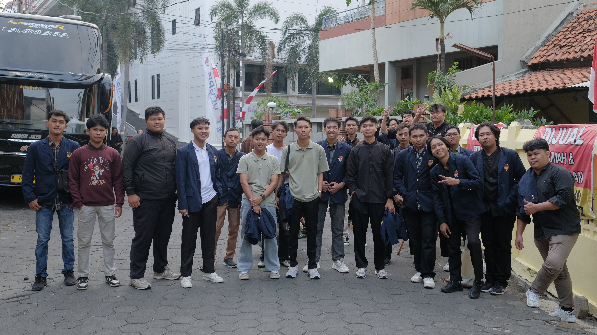
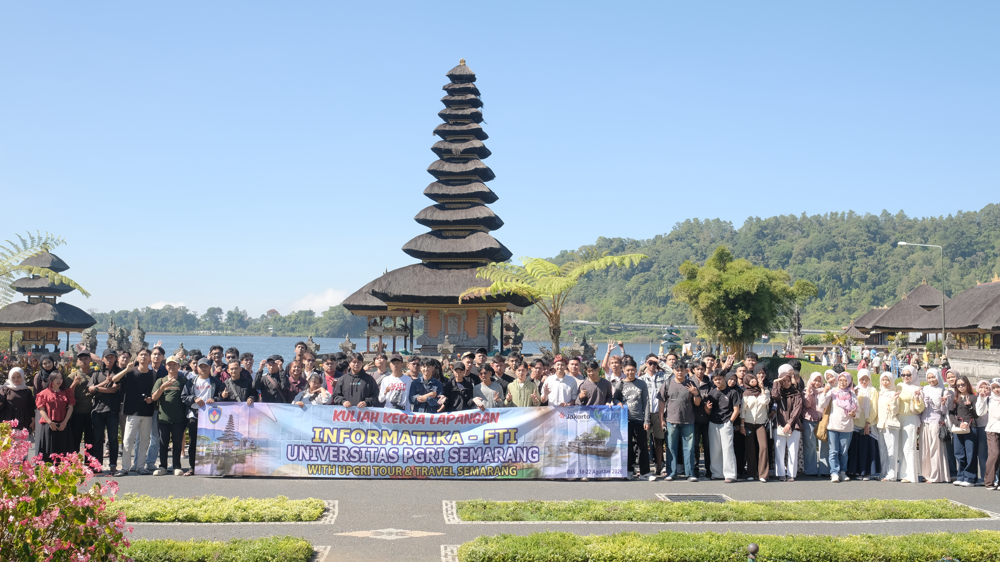
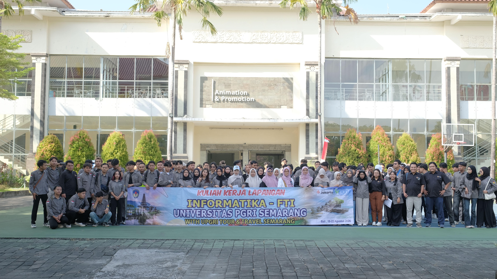
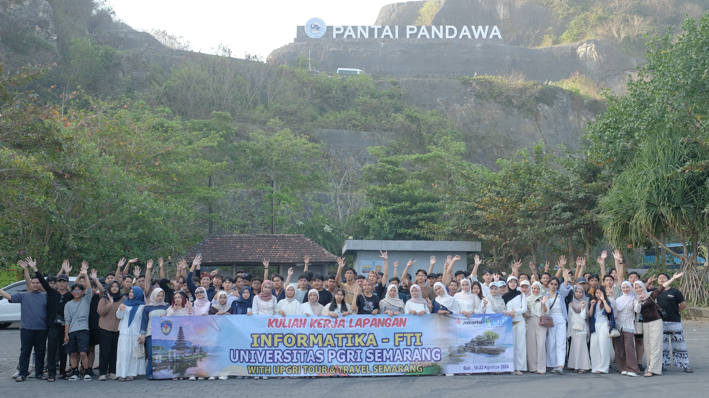
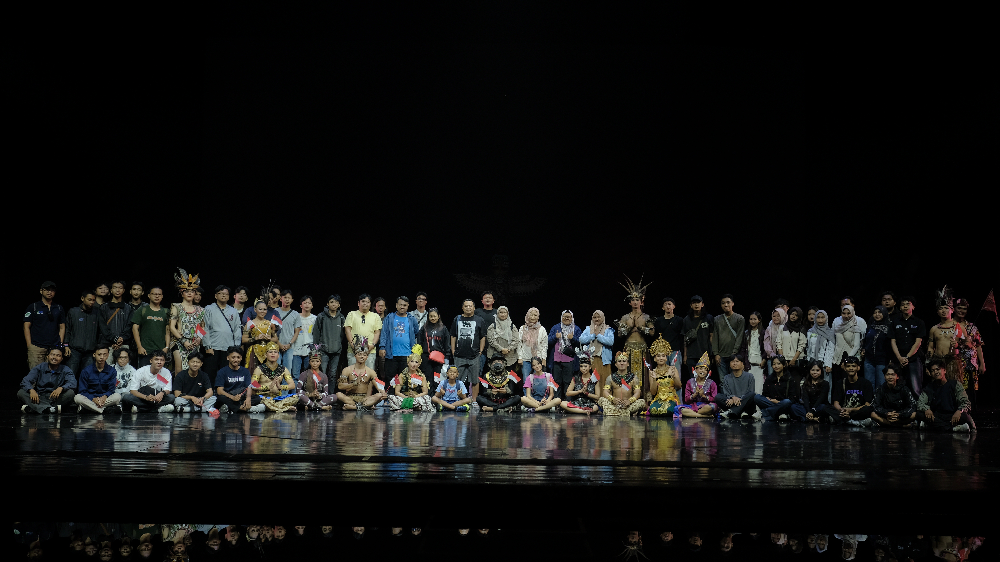

Latar Belakang
Memberikan pengalaman pembelajaran kontekstual melalui pengamatan langsung di lapangan.
✦ KULIAH KERJA LAPANGAN
Merangkai pengalaman, menambah wawasan, dan mendokumentasikan setiap langkah pembelajaran kami selama Kuliah Kerja Lapangan.
✧ Belajar langsung. Bertumbuh bersama. dan menambah Pengalaman Baru.
✦ TENTANG KAMI
Kuliah Kerja Lapangan menjadi ruang untuk menghubungkan teori yang dipelajari di kampus dengan praktik dan pengalaman nyata.
Melalui kegiatan ini, kelompok melakukan pengamatan, berdiskusi, mengumpulkan informasi, serta menyusun dokumentasi sebagai bahan laporan akademik.
Memberikan pengalaman pembelajaran kontekstual melalui pengamatan langsung di lapangan.
Memperluas wawasan, melatih kemampuan analisis, dan mengembangkan kerja sama tim.
Tersusunnya dokumentasi kegiatan dan rangkuman pembelajaran yang bermanfaat.
✦ TIM KKL
Kenali anggota kelompok yang berkolaborasi dalam kegiatan Kuliah Kerja Lapangan.
✦ JADWAL KEGIATAN
Persiapan kelompok, perjalanan menuju lokasi Kunjungan Industri, penyambutan, dan pengenalan lingkungan kegiatan.
Melakukan sebuah destinasi wisata ke Pantai Pandawa.
Berdiskusi dengan narasumber atau pihak terkait untuk memperoleh informasi lebih mendalam.
Menyusun hasil pengamatan, membahas temuan, dan mengevaluasi hasil kegiatan bersama kelompok.
Menyelesaikan dokumentasi, melakukan penutupan, berpamitan, dan kembali setelah kegiatan selesai.
✦ DOKUMENTASI LAPANGAN

Keberangkatan awal dari kampus menuju ke tujuan awal di PT Victoria Care dan melakukan kunjungan industri serta berbagi pengalaman baru. Bisa belajar hal hal baru

setelah sampai dari bali destinasi pada hari ke 2 yaitu mengunjungi wisata candi bedugul,

Pada hari ketiga melakukan kunjungan industri di Balai Diklat Bali dan mengeksplorasi serta mencari pengalaman baru dan menambah wawasan.

Pada hari keempat yaitu mengunjungi destinasi wisata pantai pandawa di pantai pandawa kita melihat sebuah tari khas daerah bali yaitu tari kecak

Kegiatan Pada Hari kelima itu makan malam di tepi pantai sekaligus melakukan makrab atau yang sering disebut malam keakraban, di tepi pantai sekaligus hari terakhir di bali sebelum pulang ke kampus UPGRIS
Ganti teks laporan contoh dengan kegiatan yang benar-benar dilakukan kelompokmu.
✦ GALERI KEGIATAN
Dokumentasikan momen penting dari perjalanan KKL kelompokmu.
✦ TERIMA KASIH TELAH BERKUNJUNG
Terima kasih telah melihat dokumentasi Kuliah Kerja Lapangan kelompok kami.